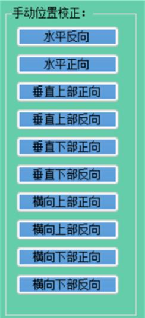
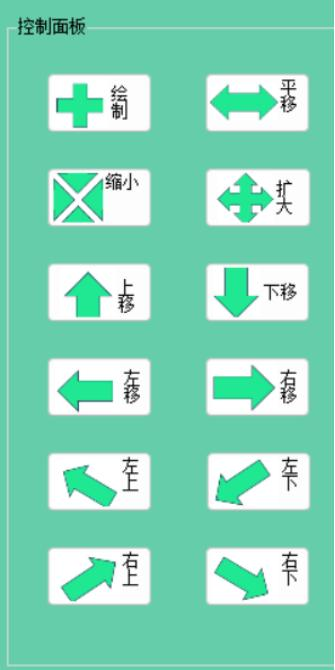

软件特点
实时图像采集
集成高性能图像采集系统，实现环境实时显示和精确控制，提供多种移动方式满足不同场景需求。

智能位置校准
内置位置移动装置，通过位置校准功能确保装置始终处于正确位置，为屏蔽板控制提供准确基础。

系统优化
采用轻量级系统架构，低资源占用，支持Windows 7至Windows 10多种操作系统。

操作辅助
内置智能化操作辅助功能，配备限位器提醒，避免过度调节，延长设备使用寿命。